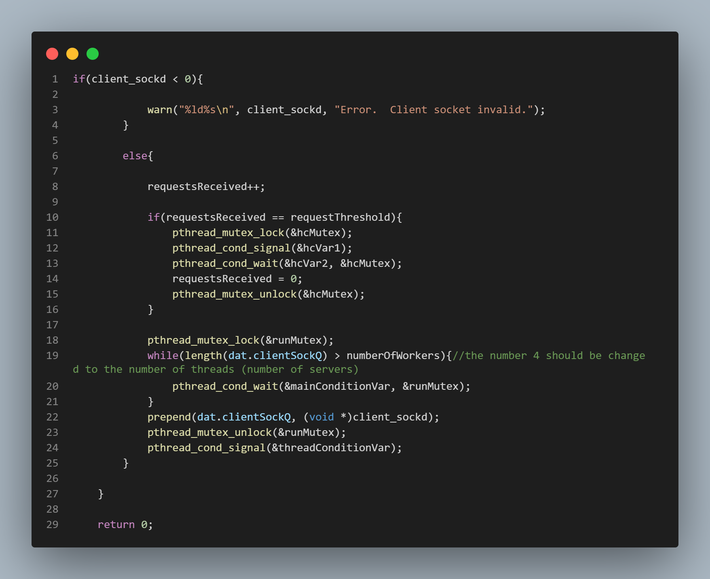
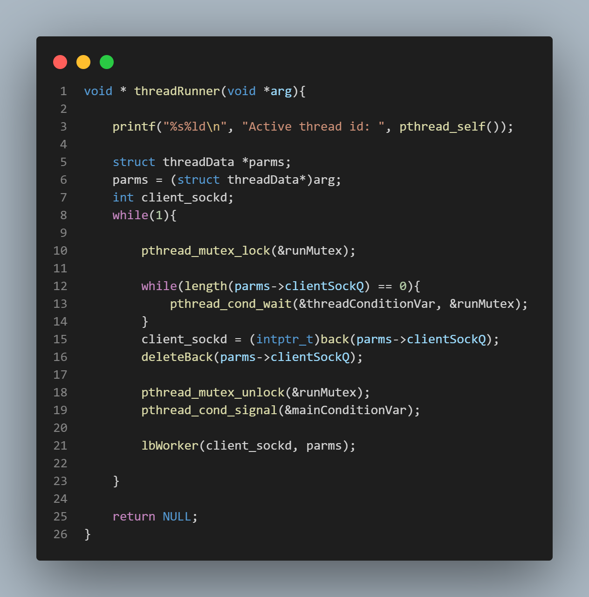
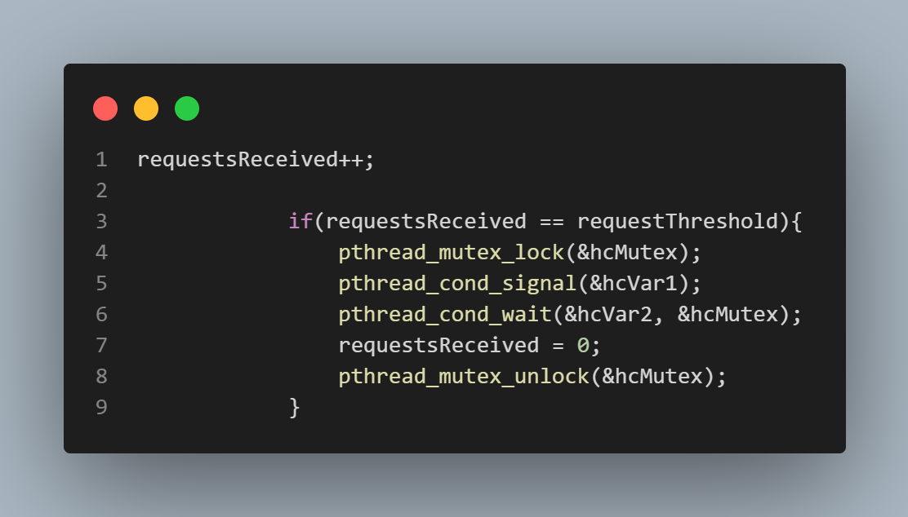
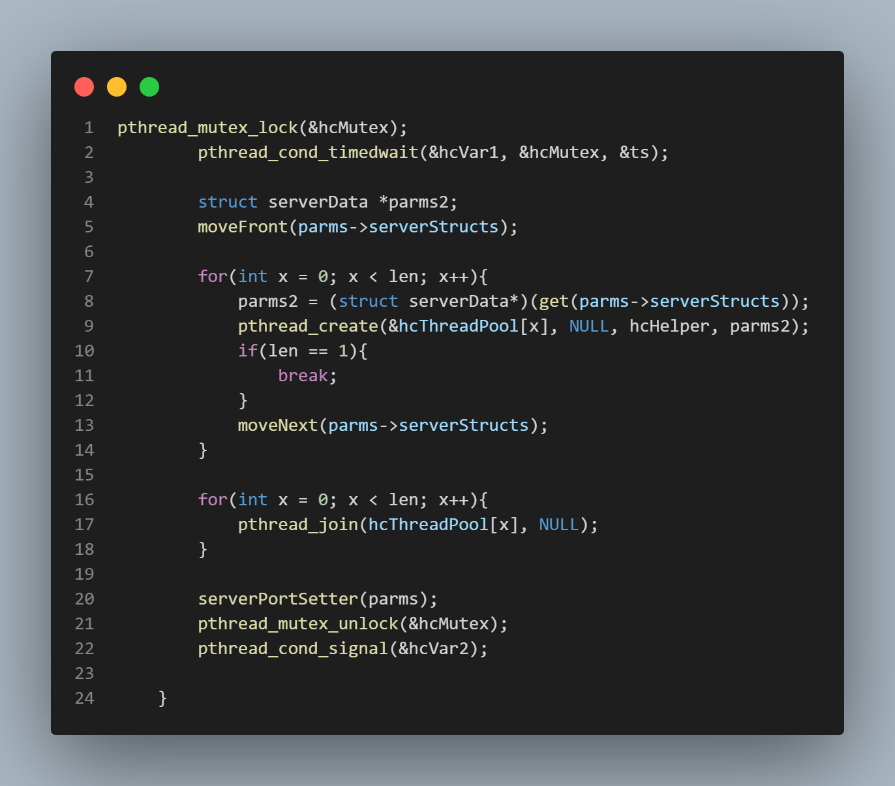
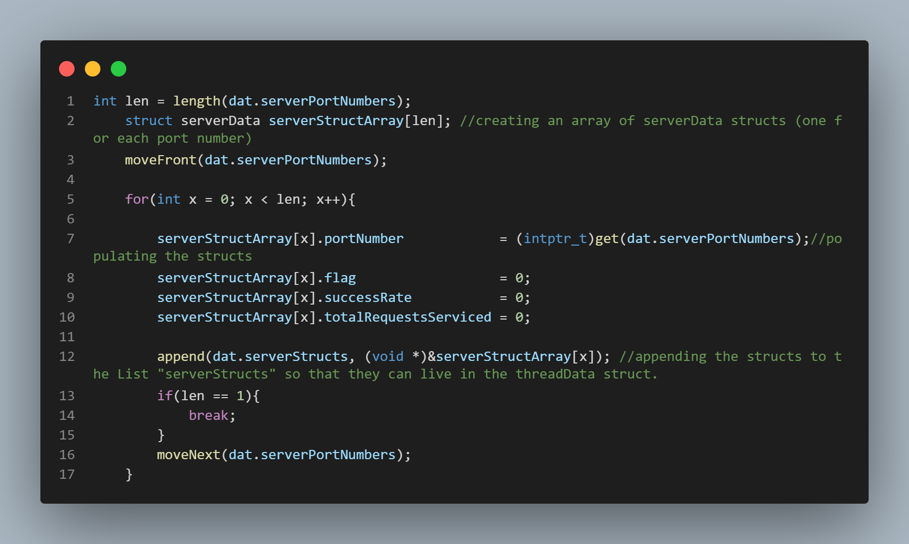
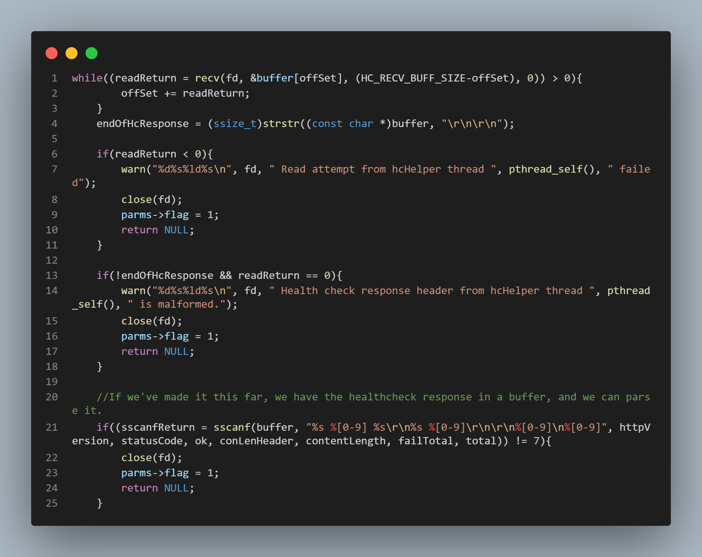
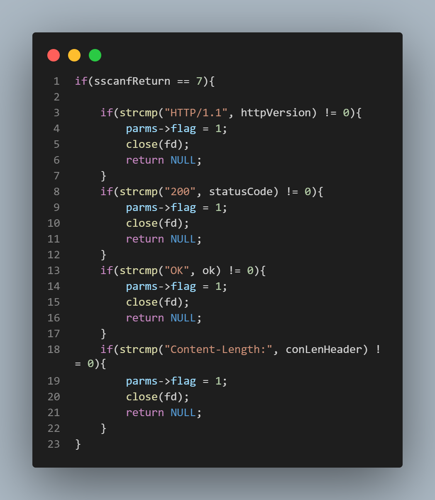
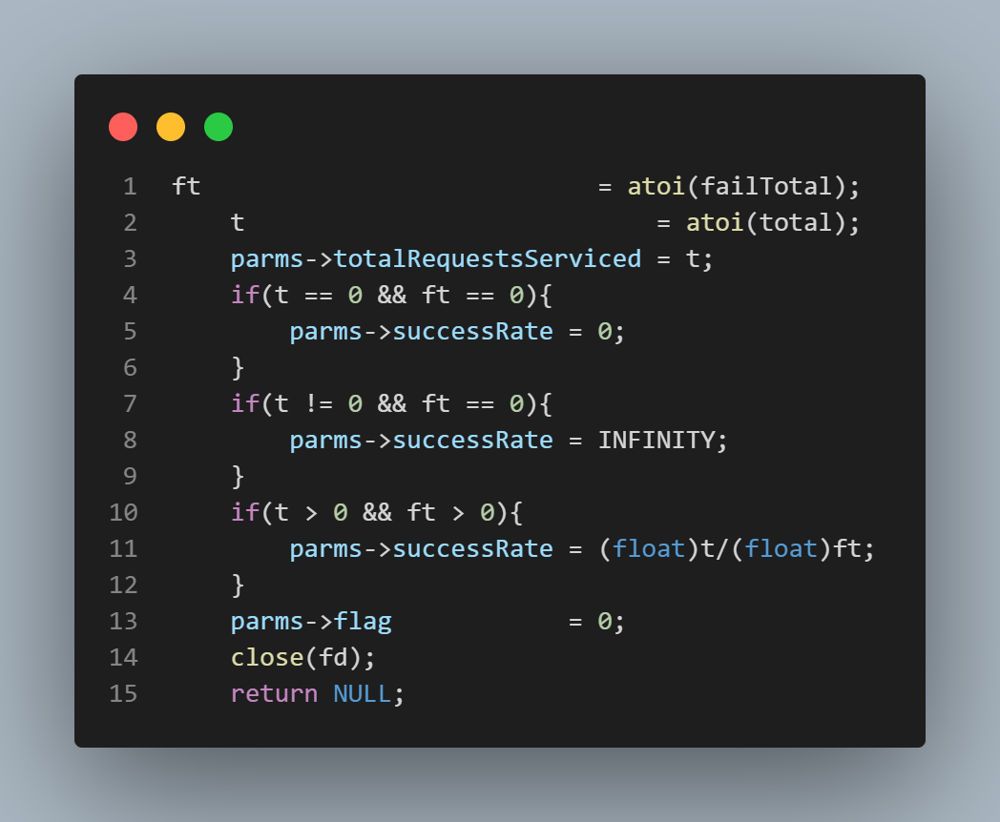
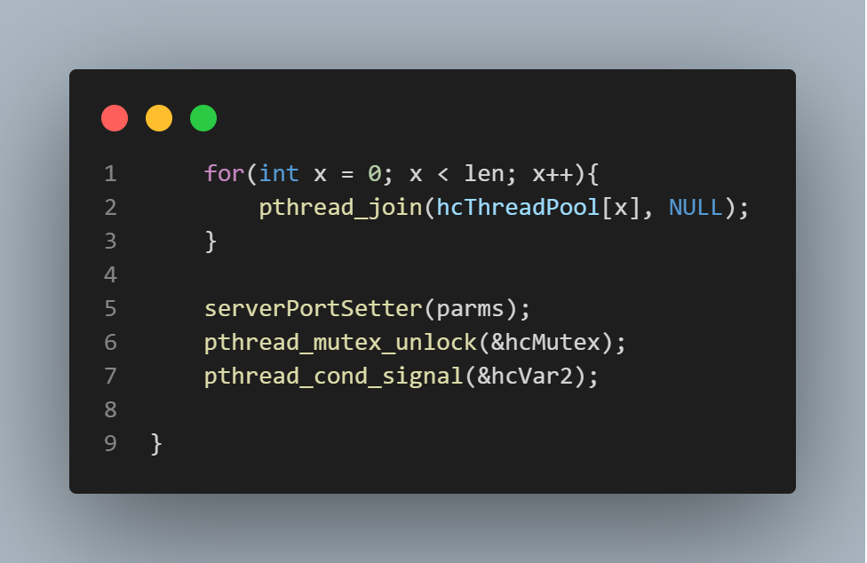

"You were supposed to bring balance to the servers, not leave them in darkness!!"
Implementing a load balancer is a crucial component of
running a system
of HTTP servers (or for a distributed system of
servers). The purpose of the
load balancer is to prevent any single server from
bearing the brunt of the
request load.


The Producer - Consumer Dynamic ... Again
If you've already taken a look at my Multi-Threaded HTTP Server in C, you've seen this before. Since the load balancer is essentially doing the same thing (initially) as the servers themselves, the logic is the same here. Each load balancer worker thread waits for work to be enqueued, and the worker threads lie dormant if there is no work to handle (no requests enqueued to the clientSockQ). By the same token, the main thread lies dormant if all of the worker threads are occupied handling requests. In this case, the main thread will not enqueue any additional requests to the clientSockQ, and will instead allow the requests to "pile up" or enqueue on the "ret" variable. There is of course a difference between the logic here and the logic of the Multi-Threaded HTTP Server; and that is the inclusion of the "health check" functionality. This I will cover in the next section.


The Criteria for Load Balancing
and the 'Health Check' ...
The top-most picture to the right is a sub-section of the 'Producer' code
from the previous section. The 'Producer', i.e., the main thread, keeps track
of how many requests it has received. The main thread is also supplied with a threshold value
it gets from the user via command line argument (if no command line argument is supplied
by the user, the threshold value defaults to 5). If this threshold value is reached, a health
check is triggered. The health check function sends a threaded health check request to each
active server, and the servers return the total number of requests they have received over the number
of unsuccessfully serviced requests (an unsuccessful servicing of a request simply means a request to which
a response in the 400's or 500's was returned). The "total number of requests" value that is returned
by the server is used by the load balancer to determine which server is designated as the "least loaded".
After the health check is triggered, the 'requestsReceived' variable is set back to 0, of course.
The bottom picture is of the health function itself. This is the function that actually sends the
health check requests to the servers once the threshold is reached. When the threshold is reached, a signal is sent
from the main thread to the health check function's "hcVar1" conditional wait variable which allows the health check function
to send its threads out to collect their responses from the servers (the health check is itself threaded). Each thread is initialized with its own server struct
for maintaining its data set as well as the function that will conduct the actual request sending and receiving.
The function representing each thread's operations is called the 'hcHelper' function.
I will cover the 'hcHelper' function in the next section.





The 'hcHelper' Function
In the top-most picture, the 'serverData' struct is depicted. This struct contains the necessary data
fields for the health check function to supply to the hcHelper function, i.e., the health check threads.
In the second picture from the top, a section of code from the main function, i.e., the main thread, is depicted.
In this code, an array of serverData structs (one for each active server) is created and initialized. Each 'portNumber' of each serverData struct
field is populated with the port number of an active server, supplied from the command line, of course.
The other fields are initialized to 0.
The third picture from the top begins the relevant portion of the hcHelper function itself. We must
read the entire response from the server and run some checks on this response to make sure that it is
correctly formatted. Lines 1 - 18 in the third picture from the top accomplish this. Lines 21 - 23
perform a final check and also extract the total number of unsuccessfully serviced requests as well as
the total number of requests serviced from the server's response. These values are stored in the 'total'
and 'failTotal' variables, respectively.
The fourth picture from the top depicts a series of checks on the sub-headers of the server's response.
If all these checks are cleared, the total number of requests serviced as well as the total number of
unsuccessfully serviced requests are stored in the variables 't' and 'ft', respectively. The 'serverData'
struct field 'totalRequestsServiced' is set to 't', and the thread returns to the 'healthCheck' function.
The healthCheck function joins the threads and calls the 'serverPortSetter' function with the entire
array of serverData structs as an argument. It is this 'serverPortSetter' function I shall cover in the next
section.
The 'serverPortSetter' Function
The 'serverPortSetter' function receives the 'threadData' struct which is the universally visible struct.
This struct is visible to all load balancer worker threads, and whenever its data fields
are accessed, it must be in atomic fashion, i.e., within the confines of mutex locks.The 'threadData'
struct contains the array of serverData structs, as well as the 'globalServerPort' variable and other important fields. It is the 'globalServerPort' that
all load balancer threads see and channel their requests to, and so it is this field that the 'serverPortSetter'
function 'sets' as a result of its algorithm.
The serverPortSetter function's algorithm essentially functions as follows:
It iterates through the serverStruct linked list until it finds the first server that is not marked as down
(servers are marked as down by setting a 'flag' variable to 1 if it is determined that they have not responded to a health
check request). The algorithm keeps track of the total number of requests serviced by each server as it iterates through the list,
and keeps a running record of the minimum of all totals out of all active servers.
When the algorithm concludes, it sets the 'globalServerPort' to the port number associated with the server
that has been determined to have serviced the lowest number of requests, and it is this port number
to which all load balancer worker threads will send their requests.
Synopsis
The Multi-Threaded HTTP Server Load Balancer. This project functions as a load balancer for the multi-threaded HTTP server also featured in this portfolio. The load balancer is itself multi-threaded, and also implements a multi-threaded 'health check' to determine the load of all active servers it interfaces with. This project seemed like it was a slight step down in difficulty after having completed the multi-threaded HTTP server itself, but I also owe much of my progress on this project to help from others in terms of understanding. I cannot overstate the importance of friendship and having people around you who are willing discuss problems even when it is of no benefit to them directly. I learned so much from this project, and I am confident that it will serve as an inexhaustible reference point for future endeavors. I have containerized the server initialization in a sub-folder and have increased ease of use with a very nifty script, so feel free to pop over to the repository by clicking the button below, clone it, and play around with the load balancer!